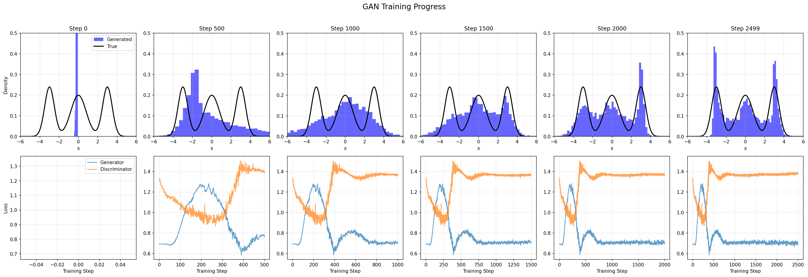
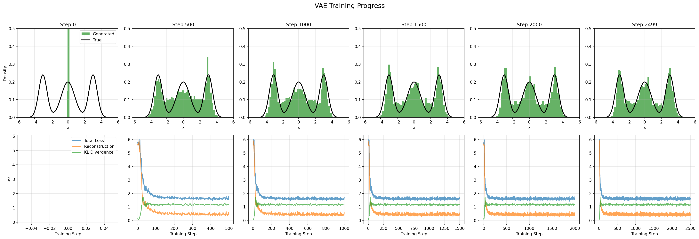
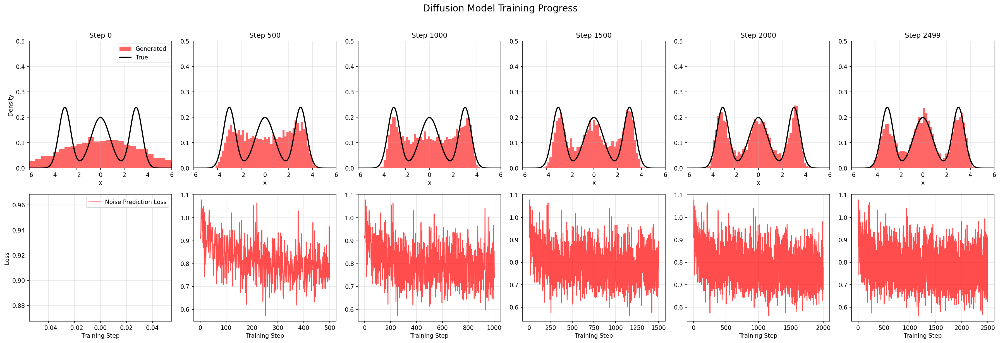
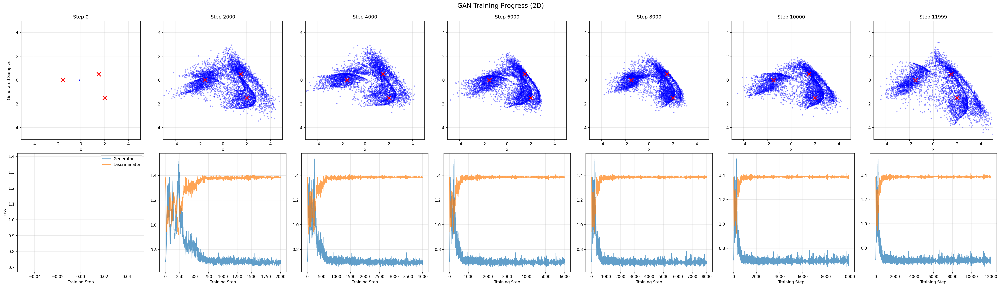
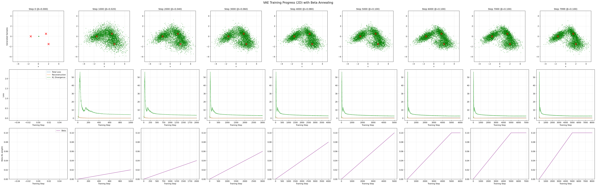
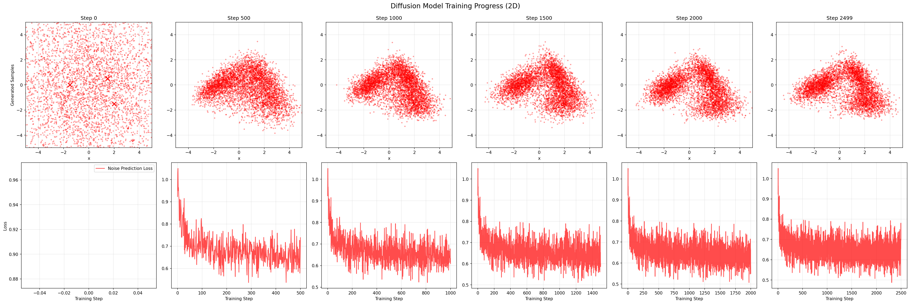

8 - Generative Models
After this lecture you should be able to:
- Explain the core mechanisms of major generative model families: autoregressive, diffusion, GANs, and VAEs
- Compare tradeoffs between these approaches (sampling speed, quality, coverage, likelihood computation)
- Understand how conditional generation extends models to accept additional inputs (text, images, class labels)
- Utilize pre-trained models (Stable Diffusion) and efficient fine-tuning techniques (LoRA) for practical applications
Four major generative model families make different tradeoffs: Autoregressive (exact likelihood, slow sequential sampling), Diffusion (SOTA quality, iterative denoising), GANs (fast generation, adversarial training, mode collapse risk), VAEs (structured latent space, approximate likelihood). Conditional generation extends models to accept text, images, or labels as input. Stable Diffusion runs diffusion in VAE latent space for efficiency, enabling practical high-resolution generation. LoRA fine-tuning adapts pre-trained models with minimal compute. Societal considerations include synthetic data pollution, authenticity challenges, and embedded biases.
1 Modelling Approaches
Over the past decade, several families of generative models have emerged, each with distinct philosophies and trade-offs. We introduce a few of the most important ones in the following sections, however, note that this list is not exhaustive.
1.1 Autoregressive Models
Autoregressive models generate data sequentially, predicting one element at a time conditioned on all previous elements. This sequential factorization turns the complex problem of modeling high-dimensional distributions into a series of simpler conditional distributions.
For an image with pixels \(x_1, x_2, \ldots, x_n\), the joint distribution factors as:
\[ p(x_1, x_2, \ldots, x_n) = p(x_1) \cdot p(x_2|x_1) \cdot p(x_3|x_1,x_2) \cdots p(x_n|x_1,\ldots,x_{n-1}) \]
Each conditional \(p(x_i|x_1,\ldots,x_{i-1})\) is modeled by a neural network (typically a masked CNN or Transformer). During generation, we sample from these conditionals sequentially:
- Sample \(x_1 \sim p(x_1)\)
- Sample \(x_2 \sim p(x_2|x_1)\)
- Sample \(x_3 \sim p(x_3|x_1,x_2)\)
- Continue until all pixels generated
Key advantage: Exact likelihood computation—we can evaluate \(p(x)\) for any sample.
Key limitation: Sequential generation is slow—cannot parallelize pixel prediction.
1.2 Diffusion Models
Diffusion models Ho, Jain, and Abbeel (2020) Sohl-Dickstein et al. (2015) have emerged as the state-of-the-art approach for high-quality image generation, powering systems like Stable Diffusion. The core insight is remarkably simple: learn to reverse a gradual noising process.
Figure 2 shows the forward diffusion process, whereby Gaussian noise is gradually added to an image (from left to right).
The Gaussian noise is added to data over \(T\) steps (typically 1000), following a pre-specified noise schedule. This is a deterministic process, thus no neural network is involved.
The forward process at step \(t\) is defined by:
\[\begin{equation} z_t = \sqrt{1-\beta_t} z_{t-1} + \sqrt{\beta_t} \epsilon_t, \quad \epsilon_t \sim \mathcal{N}(0, I) \end{equation}\]
where \(\beta_t\) controls the noise level (the noise schedule). This process gradually degrades the data \(z_0 = x\) into pure noise \(z_T \approx \mathcal{N}(0, I)\) over \(T\) steps. Common noise schedules (linear, cosine) start with small \(\beta_t\) values and gradually increase, ensuring smooth degradation from data to noise.
A crucial mathematical property: we can directly jump to any timestep \(z_t\) without iterating through all intermediate steps. This enables efficient training, where we randomly sample timesteps and train the denoiser on all noise levels simultaneously.
The core idea is to train a neural network to model the reverse diffusion process, thus going in the opposite direction and denoise an image. Figure 3 shows the idea.
A neural network learns to gradually remove noise, step by step. Starting from pure noise \(z_T \sim \mathcal{N}(0, I)\), the model denoises iteratively to produce realistic samples.
The neural network learns to predict the noise \(\epsilon_t\) that was added at each timestep. Crucially, the network is conditioned on the timestep \(t\), since the noise level varies dramatically from early (almost clean) to late (almost pure noise) steps. The training objective is simple:
\[\begin{equation} \mathcal{L} = \mathbb{E}_{t, x, \epsilon} \| \epsilon - f_\theta(z_t, t) \|^2 \end{equation}\]
Train the network to predict the noise \(\epsilon\) that was added to create \(z_t\) from \(x\).
The denoising network typically uses a U-Net architecture—a convolutional encoder-decoder with skip connections. The U-Net processes noisy images at multiple resolutions, with timestep \(t\) embedded and injected throughout the network.
Pros
- High-quality, diverse outputs
- Stable and reliable training
Cons
- Slow inference time
- High compute (training + inference) cost
While the standard diffusion framework has proven highly successful, researchers have explored numerous extensions and modifications:
Cold Diffusion (Bansal et al. 2022) demonstrates that the Gaussian noise assumption is not fundamental to diffusion models. The key insight: any degradation process that can be inverted works. Instead of adding Gaussian noise, Cold Diffusion applies transformations like blurring, pixelation, or masking—yet still learns to reverse them through the same denoising framework.
This generalization reveals that diffusion’s success stems from the gradual, multi-step inversion strategy rather than the specific choice of Gaussian noise. The framework adapts to diverse degradation operators, opening possibilities for task-specific degradations that may better suit particular domains or applications.
1.3 Generative Adversarial Networks
GANs, see Goodfellow et al. (2014), frame generative modeling as an adversarial game between two neural networks: a generator \(g(\mathbf{z})\) that creates fake samples, and a discriminator \(d(\mathbf{x})\) that tries to distinguish real data from generated fakes (see Figure 7). This adversarial setup drives both networks to improve: the generator learns to create increasingly realistic samples, while the discriminator becomes better at spotting fakes.

The GAN training objective can be expressed as a minimax game:
\[ \min_{g} \max_{d} \mathbb{E}_{\mathbf{x} \sim p_{data}}[\log d(\mathbf{x})] + \mathbb{E}_{\mathbf{z} \sim p_z}[\log(1 - d(g(\mathbf{z})))] \]
The discriminator \(d\) maximizes its ability to correctly classify real (\(d(\mathbf{x}) \approx 1\)) vs. fake (\(d(g(\mathbf{z})) \approx 0\)) samples. The generator \(G\) minimizes the discriminator’s success, trying to produce samples where \(d(g(\mathbf{z})) \approx 1\) (fooling the discriminator). See Figure 8 for an illustration.
In practice, training alternates between: 1. Discriminator step: Update \(d\) to better distinguish real from fake 2. Generator step: Update \(g\) to better fool the current discriminator

1.4 Variational Autoencoders
Variational Autoencoders (VAEs) (Kingma and Welling 2014) take a different approach to generative modeling, building on the autoencoder architecture (see Figure 9) but with a crucial probabilistic twist.
A VAE learns two networks that perform (approximate) inverse operations:
- Encoder \(q_{\psi}(z|x)\): Maps data \(x\) to a distribution over latent codes \(z\)
- Decoder \(p_{\theta}(x|z)\): Maps latent codes \(z\) back to data \(x\)
Unlike standard autoencoders, VAEs enforce structure on the latent space through probabilistic modeling (see Figure 10), ensuring that randomly sampled latent codes produce meaningful outputs.
VAEs optimize the Evidence Lower Bound (ELBO), which consists of two terms:
\[ \text{ELBO} = \underbrace{\mathbb{E}_{z \sim q_{\psi}(z|x)}[\log p_{\theta}(x|z)]}_{\text{Reconstruction}} - \underbrace{\text{KL}(q_{\psi}(z|x) \| p(z))}_{\text{Regularization}} \]
The reconstruction term ensures the decoder can recover the input from the latent code. The KL regularization term (typically with prior \(p(z) = \mathcal{N}(0, I)\)) prevents the latent space from developing “gaps and tendrils”—ensuring that random samples from \(\mathcal{N}(0, I)\) decode to meaningful outputs.
This balance is key to VAE behavior: the reconstruction loss wants to use the latent space flexibly, while KL regularization pushes latent codes toward a standard normal distribution. The result is a structured, continuous latent space where interpolation and attribute manipulation work smoothly.
Pros
- Principled probabilistic foundation
- Latent space structure: can interpolate in latent space and interpret factors
- Stable training
- Can be used for representation learning
Cons
- Blurry outputs (more complex variants can reduce this)
1.5 Comparing GANs, VAEs, and Diffusion Models
Having explored each model family, how do they actually behave differently? Let’s examine their behavior on simple 1D and 2D distributions to build intuition about their strengths and failure modes.
1.5.1 1D Distribution Comparison




Training progression on 1D bimodal distribution. Each panel shows how the learned distribution (orange) approaches the true distribution (blue) over training iterations.
1.5.2 2D Distribution Comparison



Training progression on 2D spiral distribution. The models must learn a complex curved manifold.
2 Conditional Generation
So far, we have discussed unconditional generation: models that learn \(p(\mathbf{x})\) or generate samples from the full training distribution. But many applications require conditional generation: producing outputs that match specific requirements or inputs.
Conditional generation models learn \(p(\mathbf{x}|\mathbf{c})\), where \(\mathbf{c}\) is a conditioning signal:
- Text prompt: “A photo of a cat wearing sunglasses”
- Class label: Generate a digit “7” or a face with “smiling” attribute
- Image: Translate sketches to photos, colorize grayscale images
- Other modalities: Depth maps, segmentation masks, audio, etc.
The core modification is simple: provide the condition \(\mathbf{c}\) as additional input to the model. However, the architectural integration varies by model family.
One example are conditional GANs. As shown in Figure 22. In this case typically only the generator receives the conditioning information \(g(\mathbf{z}, \mathbf{c})\) and \(d(\mathbf{x})\). The discriminator does not require \(\mathbf{c}\) in this case because input-output consistency is enforced with other losses that compare input and output (e.g. \(L_2\) norm).
Often, the discriminator needs to be conditioned on \(\mathbf{c}\) as well. The discriminator thus must judge whether \(\mathbf{x}\) matches the condition \(\mathbf{c}\), not just whether \(\mathbf{x}\) looks realistic. This forces the generator to respect the conditioning signal to fool the discriminator.
Training objective: \[\begin{equation} \min_{g} \max_{d} \mathbb{E}_{x, c}[\log d(\mathbf{x}, \mathbf{c})] + \mathbb{E}_{z, c}[\log(1 - d(g(\mathbf{z}, \mathbf{c}), \mathbf{c}))] \end{equation}\]
Common conditioning mechanisms:
- Concatenation: Concatenate \(\mathbf{c}\) with \(\mathbf{z}\) for generator, with \(\mathbf{x}\) for discriminator
- Class embeddings: For discrete labels, learn embedding vectors
- Cross-attention: For complex conditions (text, images), use attention mechanisms
Beyond GANs, other model families support conditioning:
- Conditional VAEs: Condition both encoder and decoder on \(c\), useful for disentangling style from content
- Autoregressive models: Condition each step on \(c\), e.g., PixelCNN for class-conditional generation
- ControlNet: Add spatial conditioning (edges, depth, pose) to pre-trained diffusion models without retraining from scratch
3 Pre-Trained Models
Training generative models from scratch requires massive datasets (millions of images), significant compute resources (weeks on multiple GPUs), and careful hyperparameter tuning. For most practical applications, pre-trained models provide a much more accessible starting point.
The landscape has been transformed by models like Stable Diffusion, which bring state-of-the-art generation capabilities to consumer hardware. These models are trained on billions of image-text pairs and can generate high-quality, diverse images from text prompts—with minimal customization required for many use cases.
Pros
- High-quality image generation out-of-the-box
- Generate images via natural language prompts
- Easy to customize or fine-tune with minimal investment (LoRA, DreamBooth)
- Active community sharing models, techniques, and improvements
Cons
- Not suitable if your data is from a highly specific domain (e.g., medical imaging, satellite imagery)
- May not work well for very specific output constraints (e.g., exact branding requirements)
- Biases from training data may propagate to outputs
- Licensing considerations for commercial use
3.1 Stable Diffusion: Practical State-of-the-Art
Stable Diffusion (Rombach et al. 2022) is an open-source text-to-image model that has become the de facto standard for accessible, high-quality image generation. See Figure 23 for some examples.
Unlike pure pixel-space diffusion (which is computationally expensive), Stable Diffusion uses latent diffusion—running the diffusion process in a compressed latent space.
3.2 Why Latent Diffusion?
Running diffusion directly on high-resolution images (e.g., 512×512×3) is computationally expensive—the U-Net must process millions of values at each denoising step. Latent Diffusion solves this by:
- Pre-training a VAE to compress images into a lower-dimensional latent space (e.g., 64×64×4)
- Running diffusion in the latent space (much faster!)
- Decoding the final latent representation back to pixel space
This provides an 8× reduction in memory and computation, making high-resolution generation practical on consumer GPUs.
3.3 Conditioning on Text (and More)
Stable Diffusion supports text-conditional generation via cross-attention to CLIP text embeddings. The U-Net attends to text features at multiple scales, enabling precise control over generated content. Beyond text, the framework supports conditioning on:
- Images: For inpainting, outpainting, and image-to-image translation
- Depth maps: For 3D-aware generation
- Segmentation masks: For spatial control
- Style embeddings: For artistic control
3.4 Fine-Tuning with LoRA
While pre-trained models are powerful, you often want to adapt them to specific styles, subjects, or domains. Traditional fine-tuning updates all model parameters (billions of weights!), requiring massive memory and compute. LoRA (Low-Rank Adaptation), see Figure 26, offers a far more efficient alternative.
Key idea: Instead of updating the full weight matrix \(W\), LoRA learns a low-rank update \(\Delta W = BA\) where:
- \(B \in \mathbb{R}^{d \times r}\) and \(A \in \mathbb{R}^{r \times k}\)
- \(r \ll \min(d, k)\) (typically \(r = 4\) to \(16\))
- Only \(A\) and \(B\) are trained; original weights \(W\) remain frozen
This reduces trainable parameters by 1000× or more, enabling fine-tuning on a single consumer GPU in hours rather than days. LoRA adapters can be easily shared, combined, and switched, creating a thriving ecosystem of specialized models.
Popular use cases:
- Style transfer: Train on artworks to mimic specific artistic styles
- Subject learning: DreamBooth + LoRA to generate images of specific people/objects
- Domain adaptation: Adapt to specialized domains (anime, architecture, product photography)
3.5 Hardware Requirements
The computational demands vary significantly between inference and training:
3.5.1 Inference (Image Generation)
- Minimum: 4-6 GB VRAM (GPU)
- Stable Diffusion 1.5 at 512×512 resolution
- Longer generation times, limited batch sizes
- Recommended: 8-12 GB VRAM
- Stable Diffusion XL at 1024×1024
- Comfortable batch sizes, faster generation
- High-end: 16+ GB VRAM
- Multiple models loaded simultaneously
- Video generation, 3D-aware models
CPU-only inference is possible but extremely slow (minutes per image vs. seconds). Many optimization techniques exist: quantization, attention slicing, model offloading.
3.5.2 Fine-Tuning (LoRA)
- Minimum: 12-16 GB VRAM
- LoRA fine-tuning with small batch sizes
- Gradient checkpointing, mixed precision required
- Recommended: 24 GB VRAM
- Comfortable batch sizes for faster convergence
- Multiple LoRA ranks simultaneously
3.5.3 Full Training (From Scratch)
- Minimum: Multiple A100 GPUs (40-80 GB each)
- Typical: Clusters with 100+ GPUs
- Duration: Days to weeks
- Cost: $10,000s to $100,000s
For most researchers and practitioners, pre-trained models + LoRA fine-tuning offer the best trade-off.
3.6 Open-Source Ecosystem
The open-source community has created a rich ecosystem of tools, models, and resources:
3.6.1 HuggingFace
HuggingFace is the central hub for open-source generative models:
Diffusers library: Unified Python API for diffusion models with extensive documentation
from diffusers import StableDiffusionPipeline pipe = StableDiffusionPipeline.from_pretrained("stabilityai/stable-diffusion-2-1") image = pipe("A photo of a cat wearing sunglasses").images[0]Model Hub: 100,000+ models including base models, fine-tunes, and LoRA adapters
Spaces: Interactive demos for trying models before downloading
Documentation: Comprehensive guides for inference, fine-tuning, and training
Best for: Programmatic access, research, production deployments, custom workflows
3.6.2 CivitAI
CivitAI is a community-driven platform specializing in Stable Diffusion models:
- Extensive model library: Thousands of community-created models, LoRAs, and embeddings
- Style-focused: Strong emphasis on artistic styles, anime, photorealism
- Preview images: See example outputs before downloading
- Version control: Track model updates and improvements
Best for: Exploring diverse styles, finding specialized models, community engagement
3.6.3 Automatic1111 WebUI
Automatic1111 provides a feature-rich web interface for local generation:
- Local execution: Run models on your own hardware with full control
- Advanced features: Inpainting, img2img, ControlNet, depth guidance
- Extensions ecosystem: Hundreds of community plugins
- Batch processing: Generate and iterate efficiently
Best for: Interactive experimentation, full control over generation, no API costs
3.7 Closed-Source Platforms
Commercial platforms offer convenient APIs and frontier models:
3.7.1 OpenAI
- Latest model: 4o Image with enhanced prompt following and coherence
- API access: Programmatic generation, inpainting, variations
- Pricing: Pay per image generated
- Strengths: Strong text understanding, safe outputs, reliable API
3.7.2 Google Gemini (Imagen)
- High photorealism: Particularly strong at realistic images
- Multimodal: Integration with Gemini’s broader capabilities
- Controlled access: Available through Google Cloud
- Strengths: Photo-quality outputs, factual accuracy
3.7.3 Replicate
- Hybrid platform: Both open- and closed-source models via unified API
- Pay-per-use: No infrastructure management, pay only for inference
- Host custom models: Deploy your own fine-tuned models
- Wide selection: SDXL, Midjourney alternatives, domain-specific models
3.7.4 Midjourney
- Artistic focus: Highly curated, aesthetic, and stylized outputs
- Discord interface: Community-driven prompt engineering
- No API: Interface only, no programmatic access
- Strengths: Artistic coherence, aesthetic quality, strong defaults
Choosing a platform:
- For prototyping: HuggingFace Spaces or Replicate (fast, no setup)
- For production: HuggingFace Diffusers or OpenAI API (reliable, scalable)
- For experimentation: Automatic1111 (full control, no API costs)
- For art/design: Midjourney or CivitAI models (aesthetic quality)
4 Conclusions & Discussions
An interesting thought: What happens if models are trained (inadvertedly) on synhetic data? Alemohammad et al. (2023) studies this and found remarkable degradation, see Figure 27.
Furthermore, synthetic imagery has obvious consequences on all of us. The lines between real and synthetic are starting to blur and it becomes increasingly difficult to distinguish both. See the following quote with respect to Figure 28.
Zunächst hatte die Polizei … die Aktion habe nicht stattgefunden, das Bild davon sei ein »Fake«. … Auf Anfrage des SPIEGEL sagte ein Sprecher der Brandenburger Polizei: »Ob die Projektion tatsächlich so ablief, ist Teil dieser Ermittlungen. Derzeit können wir es jedenfalls nicht ausschließen.«
Furthermore, biases from the internet-scale data the models have been trained on seep into the models. An interesting article by the Washington post Link investigated this Figure 29.
They found strong biases, for example, with respect to the depiction of beautiful women, see Figure 30.